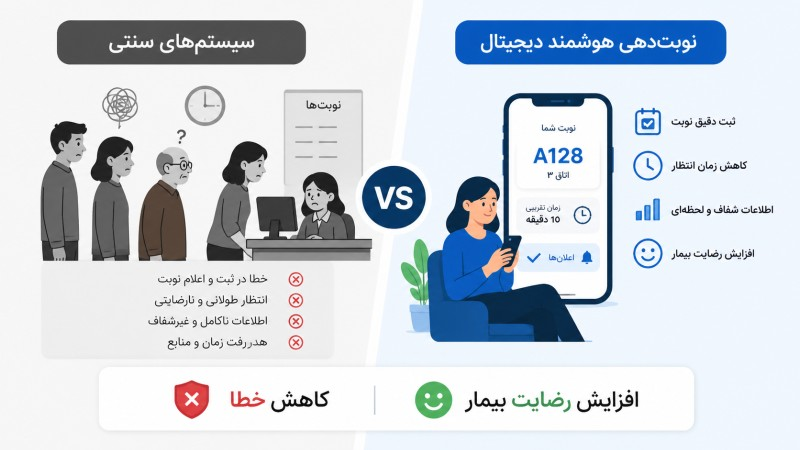

تصور کنید روز شلوغی از کلینیک دارید: یک متخصص لیزر، چند دستگاه و دهها نوبت که باید مدیریت شوند. حالا یکی از بیماران بدون اطلاع قبلی نمیآید. نه فقط یک ساعت تلف شده — یعنی درآمدی از دست رفته که هیچوقت برنمیگردد. مشکل اینجاست که این اتفاق برای اغلب کلینیکهای ایران هنوز یک روال روزانه است. اما راهحل وجود دارد و خیلی سادهتر از چیزیست که فکرش را میکنید.

چرا نوبتدهی سنتی کافی نیست؟
روش قدیمی نوبتدهی — دفتر کاغذی یا حتی یک جدول اکسل — برای کلینیک امروزی دیگر جواب نمیدهد. وقتی تعداد بیماران بالا میرود، یک منشی بهتنهایی نمیتواند همه تماسها را مدیریت کند، نوبتهای تکراری را پیدا کند، یادآوریها را بفرستد و همزمان جواب بیمارانی را که دم در ایستادهاند بدهد.
علاوه بر این، بیماران امروز انتظار دارند که نوبتشان را آنلاین بگیرند — هر وقت که بخواهند، حتی ساعت یازده شب. اگر این امکان را ندهید، احتمال دارد به کلینیک رقیب بروند که سیستم راحتتری دارد. نوبتدهی دیجیتال دیگر یک مزیت رقابتی نیست؛ یک ضرورت است.
یادآوری پیامکی؛ ساده اما قدرتمند
یکی از موثرترین ابزارهایی که یک سیستم نوبتدهی حرفهای در اختیار شما میگذارد، ارسال خودکار یادآوری پیامکی است. این قابلیت به ظاهر ساده، تأثیر شگفتانگیزی روی کلینیک شما دارد:
- کاهش چشمگیر غیبت بیماران: بیماری که پیامک یادآوری دریافت میکند، احتمال فراموش کردن نوبتش به شدت کاهش مییابد.
- آزاد شدن وقت منشی: به جای تماس تلفنی دستی با دهها بیمار، سیستم این کار را به طور خودکار انجام میدهد.
- فرصت لغو بهموقع: بیمارانی که نمیتوانند بیایند، از طریق پیامک اعلام میکنند و شما فرصت پر کردن آن نوبت را دارید.
- تجربه بهتر برای بیمار: بیماری که احساس میکند به او اهمیت داده میشود، وفادارتر میماند و شما را به دیگران معرفی میکند.
- پیامکهای تبلیغاتی هدفمند: میتوانید به بیمارانی که مدتی نیامدهاند پیشنهاد ویژه بفرستید و آنها را برگردانید.
مطالعات نشان میدهد که ارسال یادآوری پیامکی ۲۴ ساعت قبل از نوبت، میزان غیبت بیماران را تا ۳۸٪ کاهش میدهد — یعنی برای هر ۱۰ نوبت، حدود ۴ نوبت بیشتر پر میماند.
ویژگیهای یک سیستم نوبتدهی حرفهای
هر نرمافزار نوبتدهیای به درد کلینیک لیزر نمیخورد. باید بدانید چه چیزی را میخرید. یک سیستم حرفهای باید موارد زیر را داشته باشد:
- نوبتدهی آنلاین ۲۴/۷: بیمار بدون تماس تلفنی، هر ساعتی از شبانهروز نوبت بگیرد.
- یادآوری خودکار پیامکی: ارسال یادآوری چند ساعت یا یک روز قبل از نوبت، به صورت کاملاً خودکار.
- مدیریت تقویم پزشکان و دستگاهها: نمایش ظرفیت هر متخصص و هر دستگاه به صورت جداگانه.
- سابقه کامل بیمار: دسترسی سریع به تاریخچه درمان، تعداد جلسات گذشته و یادداشتهای پزشکی.
- گزارشگیری هوشمند: بدانید کدام ساعتها پرترافیکتر هستند و برنامه کلینیک را بر اساس آن بچینید.
- یکپارچگی با حسابداری: نوبتها مستقیماً به فاکتور و پرداخت وصل شوند.
نوبتدهی آنلاین و اعتماد بیماران
وقتی بیمار میتواند از گوشیاش نوبت بگیرد، تأییدیه آنی دریافت کند و چند ساعت قبل از جلسه یادآوری بگیرد، یک پیام روشن دریافت میکند: این کلینیک حرفهای است.
در بازار رقابتی کلینیکهای لیزر و زیبایی، اعتماد اولیه همه چیز است. بسیاری از بیماران قبل از اولین مراجعه، تجربه دیجیتال شما را میسنجند — وبسایت، نحوه نوبتدهی، سرعت پاسخدهی. سیستم نوبتدهی آنلاین، اولین نقطه تماس بیمار با کلینیک شماست و میتواند تصمیمگیری او را تغییر دهد.
داشبورد روزانه: یک نگاه، همه چیز
یک مدیر خوب کلینیک باید هر روز صبح با یک نگاه بداند: چند نوبت دارد، چه درآمدی انتظار دارد، کدام دستگاهها استفاده میشوند و آیا موجودی مواد مصرفی کافی است. داشبورد روزانه دکتر لیزر دقیقاً همین را به شما میدهد.
با داشبورد هوشمند، دیگر لازم نیست بین چند نرمافزار مختلف جابهجا شوید. نوبتها، حسابداری، انبار و ارتباط با بیمار — همه در یک صفحه، به شکل ساده و قابلفهم. این یعنی تصمیمگیری سریعتر، خطاهای کمتر و کلینیکی که مثل ساعت کار میکند.
اگر میخواهید کلینیک لیزر یا زیباییتان را به سطح بعدی ببرید، دکتر لیزر یک سیستم مدیریتی کامل است که نوبتدهی هوشمند، یادآوری پیامکی، حسابداری و انبارداری را زیر یک سقف جمع کرده. همین الان با پلن رایگان شروع کنید و تفاوت را از روز اول احساس کنید.